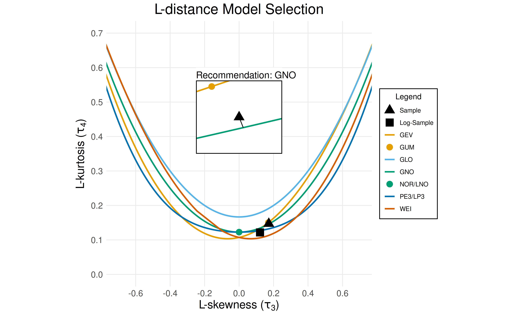

This vignette demonstrates how to use the ffaframework
package to perform flood frequency analysis (FFA) under the assumption
of nonstationarity. Readers unfamiliar with stationary FFA workflows
should first consult the Stationary FFA vignette.
The framework supports three forms of nonstationarity, modelled as linear trends in the distribution parameters:
- A linear trend in the mean (location parameter).
- A linear trend in the variance (scale parameter).
- A linear trend in both the mean and variance.
The shape parameter is treated as a constant due to difficulties in estimation caused by sample size limitations.
Case Study
This vignette will explore data from the Bow River at Banff
(05BB001), a station in the Reference Hydrometric Basin Network. The
station is unregulated, which suggests that trends in annual maxima are
caused by changes in climate as opposed to changes in land use or cover.
Data for this station is provided as CAN-05BB001.csv in the
ffaframework package.
library(ffaframework)
df <- data_local("CAN-05BB001.csv")
head(df)
#> year max
#> 1 1909 314
#> 2 1910 230
#> 3 1911 264
#> 4 1912 174
#> 5 1913 232
#> 6 1914 214
plot_ams_data(df$max, df$year, title = "Bow River at Banff (05BB001)")
The structure List
This vignette assumes a scenario where a trend in the mean has been
identified. To specify a trend in a distribution parameter, create a
structure list containing the boolean items
location and scale. Setting these items to
TRUE specifies a trend in the location/scale parameter
respectively.
structure <- list(location = TRUE, scale = FALSE)Note: For guidance on trend detection, refer to the Trend Identification vignette.
Distribution Selection
L-moment-based distribution selection remains applicable under
nonstationarity, but requires dataset decomposition (detrending) prior
to analysis. This is accomplished using the
data_decomposition function, which takes an annual maximum
series (AMS), the corresponding vector of years, and the
structure object. The decomposed vector of data is then
passed to the selection function (select_ldistance in this
case).
data_decomposed <- data_decomposition(df$max, df$year, structure)
selection <- select_ldistance(data_decomposed)
print(selection$recommendation)
#> [1] "GNO"
plot_lmom_diagram(selection)
Conclusion: The generalized normal (GNO) distribution is the best-fit distribution for the sample.
Parameter Estimation
Because L-moments parameter estimation requires stationarity, we will
use maximum likelihood estimation for this nonstationary model. The
fit_maximum_likelihood function implements maximum
likelihood estimation for both stationary and nonstationary
distributions. It has two required arguments:
-
data: The annual maximum series observations. -
model: A three-letter code corresponding to a probability distribution (ex."GNO").
Since a nonstationary model is used, two additional arguments are required:
-
years: The corresponding vector of years for the observations indata. -
structure: The nonstationarystructureobject described above.
fit <- fit_maximum_likelihood(
df$max,
"GNO",
years = df$year,
structure = structure
)
print(fit$params)
#> [1] 224.0496619 -35.5153685 54.6324886 -0.3689085
print(fit$mll)
#> [1] -590.7329Note: The fitted parameters are: \((\mu_0, \mu_1, \sigma, \kappa)\), where the time-dependent location is modeled as \(\mu(t) = \mu_0 + \mu_1 t\). The covariate \(t\) is a linear function of the years: \((\text{years} - 1900) / 100\).
Uncertainty Quantification
Uncertainty quantification is also essential for nonstationary
probability distributions. In addition to the parametric bootstrap, the
framework implements the regula-falsi profile likelihood (RFPL) method
for MLE. The uncertainty_rfpl method has two required
arguments:
-
data: The annual maximum series observations. -
model: A three-letter code corresponding to a probability distribution (ex."GNO").
Since the model has a nonstationary structure, three additional arguments are required:
-
years: The corresponding vector of years for the observations indata. -
structure: The nonstationarystructureobject described above. -
slices: The years at which return levels are computed.
uncertainty <- uncertainty_rfpl(
df$max,
"GNO",
years = df$year,
structure = structure,
slices = c(1925, 2025)
)
plot_nsffa(uncertainty)Example Conclusion: In 2025, there is a \(1/20\) exceedance probability of a flood of approximately \(300\text{m}^3/\text{s}\) or greater. The estimated return levels have decreased by approximately \(50\text{m}^3/\text{s}\) between 1925 and 2025.
Note: Under nonstationarity, the return period reflects the probability distribution for a fixed year rather than a long-run average. To clarify this difference from stationary FFA, the phrase “effective return period” is used.